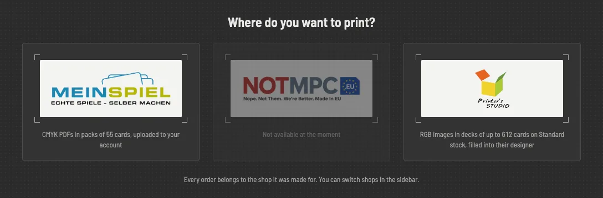
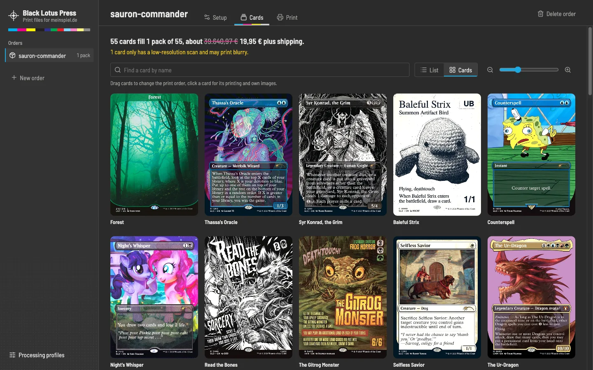
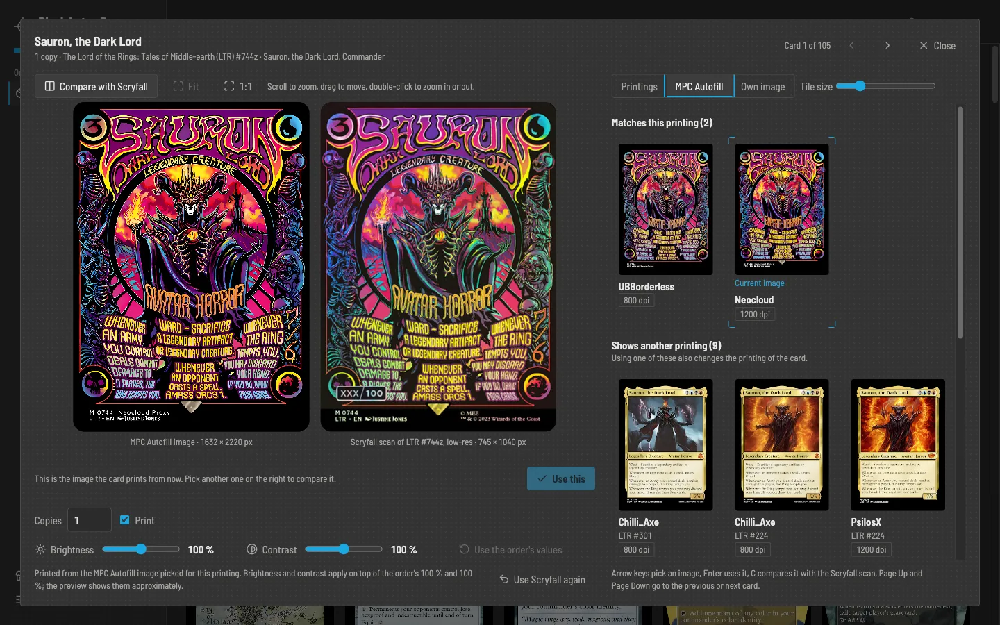
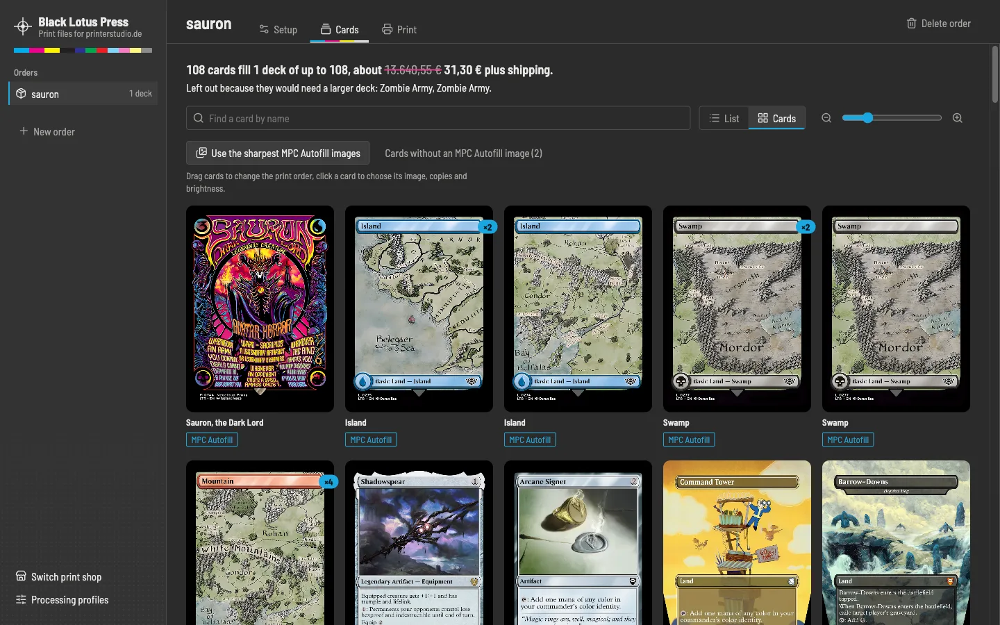
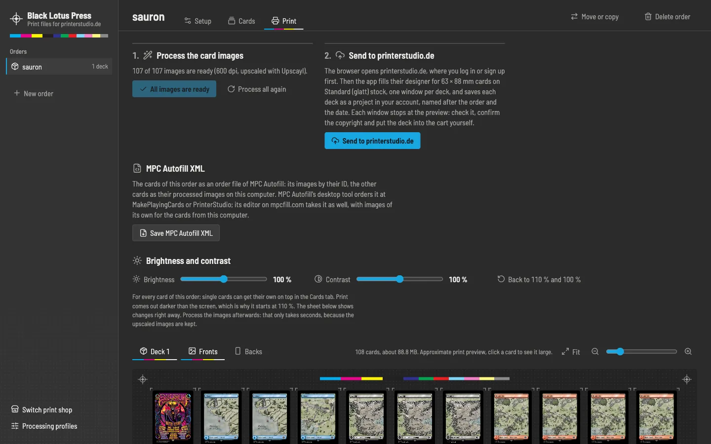
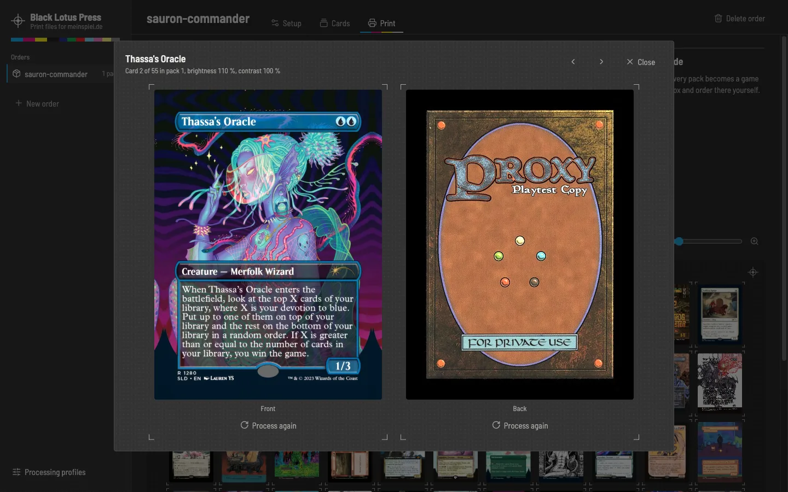
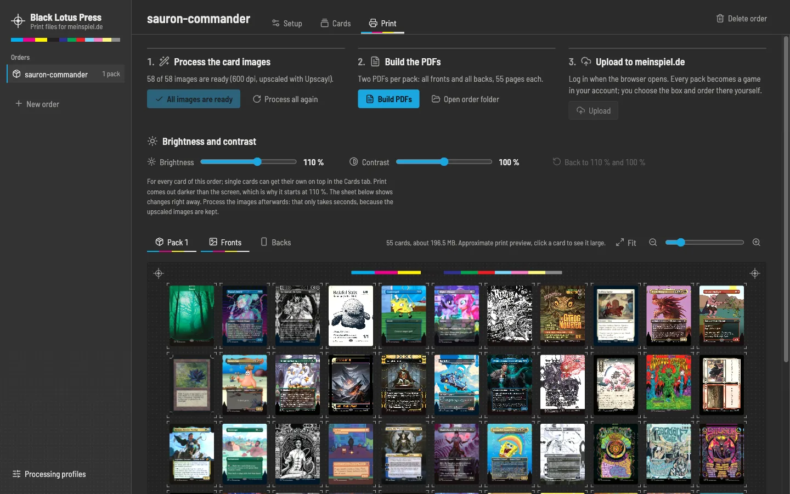

Documentation
Black Lotus Press turns Moxfield decks into print-ready card images for the custom playing cards of meinspiel.de, notmpc.eu or printerstudio.de and hands them to the shop. This page walks through it from installing to ordering.
Install
Download the app for your computer from the latest release. It needs Google Chrome or Microsoft Edge, which it opens to load Moxfield decks and to hand the cards to the print shop.
| System | Download | Notes |
|---|---|---|
| macOS on Apple Silicon (M1 and later) | Black-Lotus-Press-mac-arm64.dmg | Intel Macs are not supported. |
| Windows 10 or 11, 64-bit | Black-Lotus-Press-win-x64-setup.exe | Or the portable Black-Lotus-Press-win-x64.zip. |
| Linux, 64-bit | Black-Lotus-Press-linux-x86_64.AppImage | Make it executable, then start it. |
The first launch
The app is not signed with a paid certificate, so your system warns before the first start. This only happens once.
-
macOS: open the DMG and drag the app into Applications. macOS then refuses to open it and says it "is damaged" or that Apple "could not verify" it. The app is fine; it is only not signed with an Apple certificate. Run this once in Terminal, which is in Applications → Utilities:
It removes the "downloaded from the internet" mark from the app, then it opens normally. Run it again after installing an update.
xattr -cr "/Applications/Black Lotus Press.app" - Windows: when SmartScreen shows "Windows protected your PC", click More info and then Run anyway.
- Linux: run
chmod +x Black-Lotus-Press-linux-x86_64.AppImageand start the file. See Troubleshooting if it does not open.
Updates
The app looks for a new version each time it starts. Installed with the Windows setup or as a Linux AppImage, it downloads the update in the background and installs it when you restart or quit; Restart now in the sidebar does it right away. On a Mac and with the portable Windows ZIP, the sidebar shows the new version with a Download button that leads to this website.
First start
The app opens with an empty order list on the left. Before the first order, look at Processing profiles at the bottom of that list. A profile holds the settings every order takes over:
- Orders folder: where the card images and PDFs of each order go. By default
Documents/Black Lotus Press/orders. - Browser: Google Chrome or Microsoft Edge.
- Resolution: 300 dpi is what meinspiel.de and printerstudio.de ask for. 600 dpi with upscaling looks sharper; see Upscaling.
- Copyright line: what happens to the copyright line on the cards; see Processing profiles.
After the splash screen the app asks where you want to print; see Print shops. Then click New order, give it a name, and you are in the order's Setup tab.
Print shops

Black Lotus Press prints at three shops. Each takes the cards in its own format, and the app makes them that way and hands them over on the shop's own website.
| meinspiel.de | notmpc.eu | printerstudio.de | |
|---|---|---|---|
| Deck sizes | Exactly 55 cards | 18 to 612 cards | 18 to 612 cards, with 54 instead of 55 |
| A Commander deck | 2 packs, about 39,90 € | 1 deck of 108, about 29,97 € | 1 deck of 108, about 31,30 € |
| The app makes | Two CMYK PDFs per pack | sRGB images | sRGB images at 2.72 × 3.70 inches |
| Hand-over | Uploaded to your account | Their designer, every card in its slot | Their designer, filled up to the preview and saved in your account |
| Account | Needed; you log in yourself | Not needed | Needed; you log in yourself |
| Options | The box, chosen on meinspiel.de | Chosen in their designer | Standard (glatt) stock, set by the app |
notmpc.eu is not available at the moment, because sending orders to it does not work. Its orders are kept as they are and come back when it is available again.
Prices are for one deck without shipping, as of this release. The Cards tab shows what an order costs at its shop.
Every order belongs to the shop it was made for, and the order list shows the orders of the chosen shop; the field above it finds an order by name. Switch print shop at the bottom of the list asks again.
Move or copy an order
Move or copy next to Delete order takes an order to another shop, with its decks, cards, the images you picked and your edits. Choose the shop, then:
- Move keeps the order's name. Its images are made again in the new shop's format, CMYK or RGB and its size; that only takes seconds, because the downloaded and upscaled images are kept.
- Copy leaves the order where it is and makes a copy at the other shop under a new name. The downloaded and upscaled images are copied along, so nothing is downloaded or upscaled again. The links to meinspiel.de games stay with the original.
Afterwards the app switches to the other shop and opens the order there. Packs become decks or the other way round, so check the Cards tab for what the order costs now. While a task of the order is running, wait for it or cancel it first.
Orders and decks
An order is one print job: one or more decks, a card back, and the settings of a profile. Its tabs follow the job: Setup, Cards, Print.
Rename at the top of an order gives it another name. Its images, PDFs and the links to its meinspiel.de games come along.
Keyboard shortcuts, with Ctrl instead of Cmd on Windows and Linux: Cmd + 1, 2 and 3 switch between the tabs, Cmd + F finds a card on the Cards tab, and Cmd + N starts a new order.
Add a deck
- Paste the link of a Moxfield deck, for example
https://moxfield.com/decks/…, and click Add deck. The deck has to be public or unlisted. - Tick the boards to print: main board, sideboard, tokens, considering, attractions, contraptions, stickers, planar deck, schemes. Commanders and companions are always included.
- Click Import. A browser window opens on the deck, the app reads it and closes the window again, then it looks up every card on Scryfall.
The app uses exactly the printing chosen in Moxfield. Cards Scryfall does not know are marked, so you can pick a printing or your own image for them.
Foils
When the deck has foils in Moxfield, a dialog lists them right after the import. Keep the foil printings, or pick a non-foil printing for any of them; the card editor then shows non-foil printings only. Closing the dialog keeps everything as it is.
Update, import again, remove
- Update brings the deck's changes from Moxfield: new cards, removed cards, changed quantities and printings. Your own edits stay: switched-off cards, own images, brightness, printings you picked, and quantities you changed unless Moxfield changed them as well.
- Import again replaces the deck's cards with a fresh import. Your edits to this deck are lost.
- Remove takes the deck and its cards out of the order.
Every deck of an order is imported on its own, so editing one deck never touches the others.
Card back
Every card without its own back gets the order's card back. Choose from MPC Autofill on the Setup tab shows all card backs of MPC Autofill with their creator and resolution; type a name or a creator to find one, and click it. A few whose images MPC Autofill no longer has are marked Not available.
The field above the button holds the card back's Google Drive ID, so you can also paste one from MPC Autofill. The preview next to it shows the card back that prints.
Double-faced cards always get their real back face.
Share an order
Export at the top of an order saves it as a file for Black Lotus Press on another computer, with its decks, cards, the images you picked and your edits. The links to your meinspiel.de games stay with you.
- With the processed images takes the downloaded and upscaled images along, about 1 MB per card, so the other app neither downloads nor upscales them again.
- Only the order makes a small file. The other app downloads the images and processes them itself, which needs Upscayl when the order upscales.
Import order below the order list adds such a file. The order keeps the processing settings it was made with, so it prints the same; a name that is taken gets a number, such as sauron (1). Afterwards the app switches to the order's shop and opens it.
Cards

The Cards tab shows the whole order, as a list or as a zoomable grid. At the top, a summary says how many packs or decks the cards fill, how many slots stay blank, which tokens are left out, and what printing costs at the order's shop. The Cardmarket value of the printed cards is shown struck out next to it.
When a meinspiel.de order leaves slots of its last pack blank, the summary offers its tokens to fill them: Fill all blank slots shares the slots out over the tokens in turn, a click on a token prints another copy of it, and Find a token… searches Scryfall for any token by name, such as Clue, Food or Soldier, and adds it to the order. A token added this way belongs to no deck, so updating the decks from Moxfield keeps it. Remove from the order in its card editor takes it out again; cards from a deck are switched off instead, since the next update from Moxfield would bring them back.
Edit
- Copies: change the number in the list.
- Print: untick a card to leave it out without removing it.
- Order: drag cards, or use Alt + arrow keys on the handle. The list order is the print order.
- Find: the search box filters by name. The buttons below it show only the low-res cards, those not on Scryfall, those with an MPC Autofill image, the tokens or the switched-off cards, also together with the search; All shows every card again.
Choose the image

Click a card to open the card editor. On the left it shows the image the card prints from, large; on the right are the images to choose from, in three tabs. Click one to see it on the left, then Use this. A double-click uses it at once. The slider above the tabs makes the images bigger or smaller.
- Printings: every printing on Scryfall with its set and price. Filter by set, frame style (borderless, full art, extended art, showcase, old frame), price, paper or non-foil, and sort by date, price or set. When a card has several copies, choose how many of them get the new printing. They get their own entry right after the card; when an entry of the same card already has that printing, they join it.
- MPC Autofill: the images of MPC Autofill with their resolution. The app compares them with the Scryfall scans of all printings and shows first the ones that match the card's printing. An image of another printing gives the card that printing; custom art and own frames are kept apart.
- Own image: your own image for the front or back. PNG, JPEG and WebP in portrait work.
Compare with Scryfall shows the Scryfall scan next to the image. Scroll to zoom both at once, drag to move, double-click to zoom in or out; 1:1 shows one image pixel per screen pixel, so the difference in sharpness is plain. MPC Autofill images load in full resolution for this. Double-faced cards have a switch for the front and back.
The keyboard works too: arrow keys pick an image, Enter uses it, C compares, and Page Up and Page Down go to the previous or next card. Use Scryfall again drops the own and MPC Autofill images of the card.
MPC Autofill for the whole order

Use the sharpest MPC Autofill images on the Cards tab gives every printed card the MPC Autofill image of the highest resolution that shows its printing. Cards with an own or MPC Autofill image keep it, and cards without a matching image keep their Scryfall scan. It works for every shop: for meinspiel.de the images are converted to CMYK like the scans. Large decks take a few minutes; when Scryfall asks the app to slow down, it waits half a minute and carries on.
Afterwards a list shows the cards MPC Autofill has no image of the printing for. Choose image… opens the card editor on its MPC Autofill tab, where an image of another printing gives the card that printing. The list stays at hand on the Cards tab.
Own images and bleed
- Images in the page format, 69 × 94 mm or the same proportions, already contain the bleed and are used as they are. MPC images are made like this.
- Card-sized images, 63 × 88 mm, get a mirrored 3 mm bleed.
Own images skip the copyright and stamp clean-up, but are upscaled like every other card.
Brightness and contrast
Print comes out darker than a screen, so every order starts at 110 % brightness. Set brightness and contrast for the whole order on the Print tab, and on top of that for single cards in the card editor. The previews show the change right away.
Print and send

The Print tab first processes the card images, then hands them to the order's shop: as PDFs uploaded to meinspiel.de, or as images in the designer of notmpc.eu or printerstudio.de. Below the steps, the press sheet shows every pack or deck, fronts and backs, the way it will be printed.
For meinspiel.de and printerstudio.de, the shop opens in a browser window without tabs and address bar, exactly where the app's window is, so it reads as part of the app. A bar from Black Lotus Press sits over the shop's pages, with a panel at the top right: it lists every step of the hand-over with what it is doing right now, a progress bar for the uploads, what is done and what is left to you. Hide folds the panel away, for example when it covers a button of the shop, and Show brings it back. While you need to log in, it darkens the page around the login form and points at it. The app shows the same steps in front of the Print tab, with Show the browser window to bring the shop back to the front, and Cancel.
Process the card images
Downloads the scans and MPC Autofill images, cleans up the scans, adds the bleed, upscales the scans if the profile says so, and makes the print images in the shop's format: CMYK for meinspiel.de, sRGB for notmpc.eu and printerstudio.de; see Print formats. Images that are already done are skipped, so only new or changed cards take time. While upscaling, the step shows the GPU load and temperature on Apple Silicon Macs and with NVIDIA graphics cards. An image that fails is outlined in magenta on the press sheet, with the reason in its tooltip and in its large view; Retry the failed images downloads and processes only those again.

Click a card on the press sheet to see it large with its back. Process again makes that image anew from the download on; Process all again does it for the whole order. Use it when a card came out wrong, for example after a download error. Processing gives the same result for the same input, so a card that is wrong for another reason stays wrong; please report it.
meinspiel.de: PDFs and upload

Build PDFs writes two PDFs per pack into the order's folder; while card images are missing, the button reads Process images and build PDFs and processes them first: pack-01-fronts.pdf and pack-01-backs.pdf, 55 pages each. The list below the button shows each pack's size; both PDFs of a pack must stay below meinspiel.de's 200 MB.
- Click Upload. A browser window opens meinspiel.de's login page and accepts the cookie banner.
- Log in, or create an account. The app waits up to 15 minutes and never sees your password.
- Pack by pack, the app creates a game, uploads its two PDFs, showing how many megabytes are up, and waits while meinspiel.de processes them; the steps show each of these with meinspiel.de's own status. Every pack becomes a game in your account, named after the order, for example
my-order - Deck 1/2. Then the browser closes, and the app lists the games with links that open in your usual browser. - Open a game, choose the box, click Speichern / Bestellen and check out on meinspiel.de. The app never orders or pays anything.
When the upload stops at a pack, for example because meinspiel.de fails on it, the games made until then stay in the step. Continue with pack 3, or whichever pack is next, uploads only the rest, as long as the cards print the same; Upload all again starts over. The links to the games also stay in the step. Should meinspiel.de not save a game in your account, the browser stays open with that game; click Speichern there. Your saved games are also in your meinspiel.de account under "Gestaltete Spiele". You can always upload the PDFs by hand instead: they are ordinary files in the order's folder.
notmpc.eu: their designer
notmpc.eu is not available at the moment, because sending orders to it does not work. Its orders are kept as they are and come back when it is available again.
Send to notmpc.eu opens notmpc.eu's designer in a browser window, one tab per deck, with every card in its slot. The app uploads the images; MPC Autofill images that already have their bleed go there as links instead when the order and the card are at 100 % brightness and contrast. No account is needed.
Choose the options and order in the designer yourself; the app never orders or pays anything. When notmpc.eu asks to wait after many uploads in a row, the app waits a minute at a time, up to a quarter of an hour, and carries on.
printerstudio.de: their designer up to the preview
Send to printerstudio.de opens printerstudio.de's login page in a browser window. Log in, or sign up for an account there; the app waits up to 15 minutes and never sees your password. Then it opens the designer for 63 × 88 mm cards on Standard (glatt) stock, one window per deck, uploads the images one at a time and puts every card in its slot. All cards get the one card back, unless a card has a back of its own.
Each deck is saved as a project in your printerstudio.de account, after the fronts and again after the backs, so it is kept even when the browser is closed. The project is named after the order and the date, for example sauron 2026-10-19, or sauron 1/2 2026-10-19 when the order has several decks; printerstudio.de takes 32 characters, so long names are shortened. When printerstudio.de does not confirm saving a deck, the step says so; save it in its window with Speichern.
- Each window stops at the preview. Check the cards there.
- Tick the copyright confirmation: only you can confirm that you may use the images, so the app never does.
- Click Zum Einkaufswagen and order on printerstudio.de. The app never orders or pays anything.
The stock cannot be changed in the designer afterwards; for another stock, make the deck by hand on printerstudio.de.
MPC Autofill XML
Save MPC Autofill XML on the Print tab, for every shop, saves the cards of the order as an order file of MPC Autofill. MPC Autofill images and the card back are in it by their Google Drive ID, the other cards as their processed images on this computer; so process the images first. Blank cards are left out, and the stock is MPC Autofill's default, (S30) Standard Smooth.
- MPC Autofill's desktop tool orders the file at MakePlayingCards or PrinterStudio. It downloads the MPC Autofill images itself and uploads the processed images from this computer.
- MPC Autofill's editor on mpcfill.com imports it as well. It does not know the images from this computer, so it marks them and gives those cards the first image it finds for their name.
The file points to the images by their place on this computer, so it is not meant to be shared, unless every card has an MPC Autofill image.
Tasks
Imports, processing, PDFs and uploads run as tasks in the background. They are listed under Running at the bottom of the order list, with their progress and a button to cancel them, or to close the shop's browser after an upload. One task runs at a time. When one ends while the app is in the background, a notification of your system says so; clicking it brings the app back.
Processing profiles
Profiles hold the settings for processing. An order takes over a copy of its profile; when you change the profile later, the order's Setup tab offers to use the changed profile. Changing the resolution, the copyright line or the upscaling processes the order's images again.
Copyright line
| Choice | Result |
|---|---|
| Keep the original | The card as printed by Wizards of the Coast. The default. |
| Blur it | The copyright line is blurred. |
| Blur it and add "Proxy – not for sale" | Blurred, with that note in white on top. |
| Blur it and write my own text | Blurred, with your own text in its place. Keep it about as long as the original line. |
The clean-up works on Scryfall's card frames and is best effort: on unusual frames a box may sit slightly off.
Advanced
Card width, bleed, corner radius and border crop are for special cases; the defaults fit all three shops.
Upscaling
Scryfall's scans are 745 pixels wide. That is enough for 300 dpi; for 600 dpi the app scales them up with Upscayl, an AI upscaler that runs on your graphics card. Its models are trained on noisy, blurry and compressed images, so upscaling also cleans up the scans a little.
- Open Processing profiles, click Install Upscayl. It downloads the program and its models from GitHub.
- Make sure Upscale the Scryfall scans with Upscayl is ticked, set the resolution to 600 dpi and pick a model.
- Save the profile, and use it in the order's Setup tab.
Upscaling only runs above 300 dpi. Seconds per card on an Apple M1 Max:
| Model | Seconds | Character |
|---|---|---|
upscayl-lite-4x | 1.7 | Fast and close to the large models. |
digital-art-4x | 9.6 | Smoothest; suits drawn art, can look flat on painted art. |
upscayl-standard-4x | 12.0 | Crisp edges and text. |
ultrasharp-4x | 12.1 | Crisp edges and text, a little more contrast. |
ultramix-balanced-4x | 12.1 | Crisp, slightly softer than ultrasharp. |
remacri-4x | 12.5 | Natural, keeps the texture of the scan. |
high-fidelity-4x | 13.7 | Closest to the original scan. |
Every model is clearly sharper than plain resizing; the differences between them only show up close. For meinspiel.de, a 600 dpi pack is 160 to 200 MB, right at its limit of 200 MB; the Print tab warns when a pack is too big.
MPC Autofill images are never upscaled: they are made for print, usually at 800 to 1200 dpi, and are only scaled to the resolution of the profile.
Print formats
All three shops print 63 × 88 mm cards. The app makes every image as a 69 × 94 mm page: the card plus 3 mm of bleed on every side, which is cut off. Tokens only fill the free slots of the last pack or deck; they never cause an extra pack or a larger deck, and tokens that do not fit are listed as left out.
meinspiel.de
- meinspiel.de prints decks of exactly 55 cards. Larger orders are split into several packs, and the last pack is filled with tokens, then with blank cards. A 100-card Commander deck needs two packs.
- Page n of the backs PDF is the back of page n of the fronts PDF.
- The images are CMYK with the ISO Coated v2 300 % profile that meinspiel.de asks for; the PDFs carry it as their output intent. They are not PDF/X-4, because meinspiel.de's processing fails on PDFs with the XMP metadata PDF/X-4 needs.
- A pack costs about 19,95 € plus shipping, as of this release.
notmpc.eu
- Decks of 18, 36, 55, 72, 90, 108, 126, 144, 162, 180, 198, 216, 234, 396, 504 and 612 cards. The app takes the smallest that holds the order, so a 100-card Commander deck is one deck of 108 for about 29,97 €. Orders of more than 612 cards are split.
- A deck may hold fewer cards than its size, so there are no blank cards.
- The images are sRGB JPEGs, because notmpc.eu prints RGB images.
printerstudio.de
- The same sizes as notmpc.eu, but with 54 instead of 55: 55 cards already need a deck of 72. A 100-card Commander deck is one deck of 108 for about 31,30 € on Standard (glatt) stock.
- A deck may hold fewer cards than its size, so there are no blank cards.
- The images are sRGB and 2.72 × 3.70 inches, the size of MPC Autofill images: 816 × 1110 pixels at 300 dpi. That is 0.1 mm wider than the page, and the least printerstudio.de's designer takes without warning of a low resolution. Each image may be up to 32 MB.
Where your files are
| What | Where |
|---|---|
| Card images and PDFs | The orders folder of the profile, by default Documents/Black Lotus Press/orders/<order>: the print images in cards/, and for meinspiel.de the PDFs in meinspiel/. |
| Orders, profiles, own images, Upscayl | macOS: ~/Library/Application Support/black-lotus-press/dataWindows: %APPDATA%\black-lotus-press\dataLinux: ~/.config/black-lotus-press/data |
Open order folder on the Print tab opens an order's folder. To start over, quit the app and delete the data folder; to uninstall, also delete the app.
Command-line tool
Each release also has a command-line edition, Black-Lotus-Press-cli-<system>.zip, with its own Node.js inside. Unzip it and run black-lotus-press (Windows: black-lotus-press.cmd) in a terminal. It walks you through profiles and orders with menus and does the same processing, PDFs and upload to meinspiel.de as the app, without the editing and previews. Orders for notmpc.eu and printerstudio.de can only be printed from the app. It keeps its data next to where you start it.
Questions and answers
Is Black Lotus Press free?
Yes. It is open source under the MIT license. You only pay the print shop for the printing.
Is it affiliated with meinspiel.de, notmpc.eu, printerstudio.de, Moxfield, Scryfall or Wizards of the Coast?
No. It is a fan project that uses their public websites the way you would in a browser.
Which print shop should I choose?
meinspiel.de prints packs of exactly 55 cards from CMYK PDFs and needs an account. printerstudio.de prints decks of any size up to 612 cards, so a Commander deck is one deck instead of two packs and costs less; you need an account there as well. notmpc.eu, which prints decks like that without an account, is not available at the moment. Print shops compares them.
Can I move an order to another shop?
Yes: Move or copy in the order moves it or copies it under a new name; see Move or copy an order. The images you picked and your edits come along, and the upscaled images are kept.
Can I sell or give away the printed cards?
Please don't. Card images and names belong to Wizards of the Coast and the artists. Print proxies for your own playtesting and casual games, and follow the print shop's terms. Many stores and tournaments do not allow proxies.
Why does the app open a browser window for Moxfield?
Moxfield has no public API for apps. The app opens the deck page like you would and reads the deck data the page loads, then closes the window.
Does the app see my meinspiel.de password?
No. You log in yourself in the browser window. The app only asks meinspiel.de whether someone is logged in, then uploads in that session.
Do I need an account at notmpc.eu or printerstudio.de?
At printerstudio.de, yes: you log in or sign up before the app uploads, so it can save every deck as a project in your account. notmpc.eu needs none; it is not available at the moment.
Why are the cards brightened by 10 %?
Printed cards look darker than the same image on a screen. 10 % more brightness compensates for that in most cases. Change it on the Print tab for the order, or per card.
Why does meinspiel.de's preview look washed out?
The images are in the printer's CMYK colours. meinspiel.de's on-screen preview shows CMYK files paler than they print; the print uses the CMYK values.
Why do some packs have blank cards?
meinspiel.de only prints decks of 55 cards. The last pack is filled with your tokens first, then with blank cards; the Cards tab offers to fill those with more tokens. notmpc.eu and printerstudio.de print decks with fewer cards than their size, so their decks have no blank cards.
Do I need Upscayl?
No. At 300 dpi, the resolution meinspiel.de and printerstudio.de ask for, the scans are used as they are. Upscaling to 600 dpi makes text and fine lines sharper; see Upscaling.
A card looks blurry. What can I do?
Scryfall only has a low-resolution scan of some printings; the app marks them as Low-res. Pick an MPC Autofill image or another printing of the card in the card editor, or use your own image.
Can I print at a shop the app does not know?
The PDFs of meinspiel.de orders are ordinary print PDFs: 69 × 94 mm pages with 3 mm bleed in CMYK. The images of notmpc.eu and printerstudio.de orders are ordinary sRGB JPEGs in the order's cards/ folder. Whether another print shop takes them depends on its requirements. For MakePlayingCards and PrinterStudio in other countries, save an MPC Autofill XML and order it with MPC Autofill's desktop tool.
Why does macOS say the app is damaged?
It is not damaged. The app is not signed with a paid Apple certificate, so macOS blocks it after the download. xattr -cr "/Applications/Black Lotus Press.app" in Terminal lifts the block; see Install.
Does it run on Intel Macs?
The releases are built for Apple Silicon only. On an Intel Mac you can run the app from its source code; see the README on GitHub.
Troubleshooting
macOS says the app is damaged or cannot be checked
Black Lotus Press is not signed with an Apple certificate, which costs a yearly fee. macOS blocks such apps when they come from the internet, with a message that the app "is damaged" or that Apple "could not verify" it. Move the app into Applications and run once in Terminal:
xattr -cr "/Applications/Black Lotus Press.app"Do it again after every update. When macOS only says it "could not verify" the app, System Settings → Privacy & Security → Open Anyway works as well.
The upload to meinspiel.de fails with "pcntl_waitpid failed"
That message comes from meinspiel.de's server, which sometimes fails to process larger PDFs. The packs uploaded before stay in your account, and Continue with pack … goes on with the rest. Try again later, set the profile to 300 dpi to make the files smaller, or upload the PDFs by hand on meinspiel.de. If it keeps happening, please open an issue.
notmpc.eu takes no more uploads
After many uploads in a row, notmpc.eu asks to wait a few minutes. The app waits a minute at a time and tries again; when notmpc.eu still refuses after a quarter of an hour, the task stops with notmpc.eu's message. Send the order again later.
printerstudio.de stops while uploading
The app uploads every image up to three times. When printerstudio.de still does not take one, or stops putting the images into their slots, the app stops with a message and closes the browser. Decks saved before are in your account. Check your internet connection and send the order again.
"Not logged in to printerstudio.de within 15 minutes"
The app waits a quarter of an hour for you to log in or sign up in the browser window. Send the order again and log in there; it starts as soon as printerstudio.de shows you as logged in.
printerstudio.de warns of a low resolution
Its designer marks images below 816 × 1110 pixels with Schlechte Auflösung. The app makes that size at 300 dpi and more, so set the profile to at least 300 dpi and process the images again.
Importing a deck fails or hangs
- Check that the deck is public or unlisted on Moxfield.
- Check that the browser of the profile, Chrome or Edge, is installed.
- Cancel the task under Running and import again; Moxfield sometimes shows a check page first.
"Left out the files that could not be read"
An order or profile file is damaged, for example after editing it by hand. The app shows every other order and profile and leaves the damaged file as it is, so nothing is lost. Repair it or delete it in the data folder; see Where your files are.
"Another task is still running"
One task runs at a time. Wait for it, or cancel it under Running at the bottom of the order list.
The app does not open on Linux
- AppImages need FUSE: on Ubuntu 22.04 and newer, install
libfuse2(Ubuntu 24.04:libfuse2t64). - Ubuntu 24.04 blocks the sandbox Chromium uses; start the AppImage with
--no-sandbox.
No GPU temperature
The temperature and load are read on Apple Silicon Macs and with NVIDIA graphics cards. Other graphics cards simply show no line.
Something else
Please open an issue on GitHub with what you did, what you expected and what happened, and a screenshot if it helps.
Credits and legal
Black Lotus Press is made by balatD and is based on MPC Proxy Forge by Benedikt Wüller. It is open source under the MIT license.
It uses card data and images from Scryfall, decks from Moxfield, card backs and high-resolution card images from MPC Autofill and the upscaler Upscayl. The website uses the typeface Barlow Semi Condensed under the SIL Open Font License.
Black Lotus Press is unofficial Fan Content permitted under the Fan Content Policy. Not approved/endorsed by Wizards. Portions of the materials used are property of Wizards of the Coast. ©Wizards of the Coast LLC. Not affiliated with meinspiel.de, notmpc.eu, printerstudio.de, Moxfield, Scryfall or MPC Autofill.